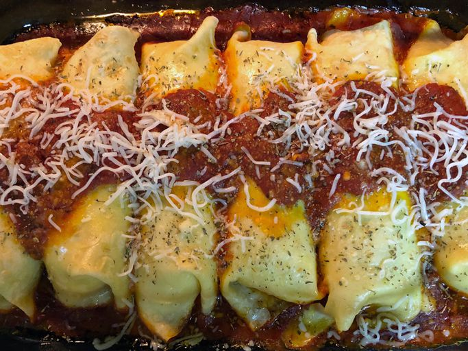

Chef John's Turkey Manicotti
Home

When you're looking for something completely different to use up those
turkey leftovers, this could be it! A tender, eggy pasta-like crepe
enfolds the cheesy, amazing filling. You can make the crepes and filling
ahead of time.
Ingredients
Crepes:
- 2 eggs
- ¾ cup all-purpose flour
- ¾ cup water
- ½ teaspoon salt
- ½ teaspoon olive oil
Filling:
- 1 cup diced cooked turkey
- 1 cup whole-milk ricotta cheese
- 1 egg
- ½ cup freshly shredded Parmigiano-Reggiano cheese
- ½ cup shredded mozzarella cheese
- ¼ teaspoon dried marjoram
- ⅛ teaspoon red pepper flakes
- ¼ cup chopped Italian parsley
- salt to taste
- 1 teaspoon olive oil, or as needed
- 1 ½ cups marinara sauce, divided
- 2 teaspoons olive oil, divided
- ⅓ cup freshly shredded Parmigiano-Reggiano cheese
-
1 tablespoon freshly shredded Parmigiano-Reggiano cheese for garnish, or
as desired
- 1 tablespoon chopped Italian parsley
Directions
- Preheat oven to 350 degrees F (175 degrees C).
-
Whisk 2 eggs, flour, water, salt, and 1/2 teaspoon olive oil together
thoroughly in a bowl to make a very smooth batter. Cover bowl with
plastic wrap and refrigerate batter for 1 hour.
-
Mix turkey, ricotta cheese, 1 egg, 1/2 cup Parmigiano-Reggiano cheese,
mozzarella cheese, marjoram, red pepper flakes, and 1/4 cup Italian
parsley in a bowl until thoroughly combined. Season with salt to taste.
-
Place a nonstick skillet over medium-high heat and brush generously with
1 teaspoon olive oil or as needed. Swirl about 1/4 cup batter into the
bottom of the pan and tilt to form a thin pancake covering the bottom of
the skillet. Cook until bottom of crepe is dry, 60 to 90 seconds. Flip
crepe and cook until other side has small browned spots, 60 to 90
seconds more. Repeat with remaining batter to make 6 crepes. Transfer
crepes to a plate as you make them.
-
Spread about 1/2 cup marinara sauce into the bottom of a 9x12-inch
baking dish. Use a brush to spread about 1/2 teaspoon of olive oil in a
thin layer up the sides of the dish. Place a crepe, dimpled side down,
onto a work surface; spread about 1/3 to 1/2 cup filling onto crepe in a
line down the middle. Roll crepe over filling and tuck in ends if
desired. Lay filled crepe into the baking dish. Repeat with remaining
crepes and filling to make 6 manicotti.
-
Spread remaining 1 cup marinara sauce onto the manicotti in a line down
the middle of the crepes, covering middle 1/3 of manicotti. Sprinkle 1/3
cup Parmigiano-Reggiano cheese all over manicotti. Drizzle manicotti
with remaining 1 1/2 teaspoon olive oil.
-
Bake in the preheated oven until manicotti are slightly browned and
puffy, about 45 minutes. Let stand 5 minutes to cool. Garnish with 1
tablespoon Parmigiano-Reggiano cheese or as desired and 1 tablespoon
Italian parsley before serving.